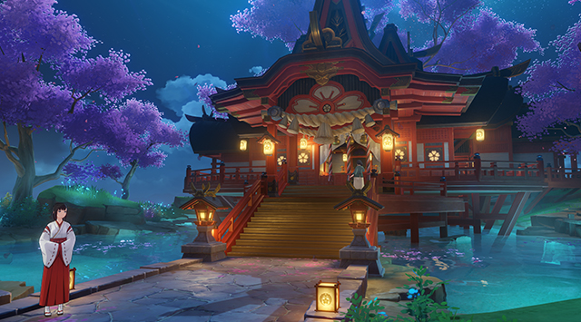
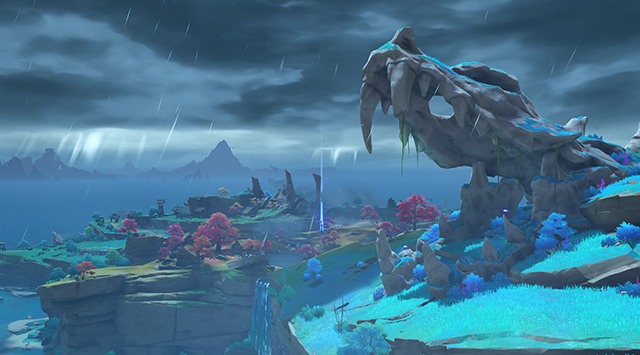

Іназума

Закритий архіпелаг далеко на сході Тейвата. Подолайте незліченні грози і ступіть на острови під покров багряних кленів і пурпурових сакур. Серед піщаних мілин, стрімких піків і відокремлених гірських гаїв ви можете побачити, як прагне до вічності Нарукамі Огосьо.
Острів Ріто

Через дію указу Сакоку потрапити на землі Нарукамі можна лише через цей пропускний пункт. Ріто підпорядковується комісії Кандзьо, і для в'їзду та виїзду потрібні дозволи, які можна дістати лише після заплутаних формальностей чи знайомства. Без дозволу ви зможете лише ненадовго затриматися на Ріто, щоб разом з іншими іноземцями помилуватися червоними кленами, черепичними дахами і спорожнілим рибальським селом.
Місто Іназума

Інадзума - найжвавіше та жвавіше поселення, де мешкає більшість жителів. Наслідуючи природний рельєф, ви можете піднятися від Ханамідзакі до вулиць міста, оглянути традиційні лавочки і скуштувати місцеві ласощі. У місті також розташована штаб-квартира Комісії Тенрьо, яка управляє громадською безпекою, збройними силами сьогунату та іншими справами. У найвищій точці міста Інадзума несе небесний дозор сьоґун Райден, простягаючи свою владу над усім сущим.
Ліс Тіндзю

Тихий та таємничий ліс біля його підніжжя. Статуї тануки, що видніються всюди, таїться в тіні дерев торії і заховане в серці лісу занедбане святилище... Всі вони, подібно до дзюркотливого струмка, ведуть тиху розповідь про колишні чудеса. А ще, кажуть, у лісі Тіндзю можна зустріти чарівних істот, які не проти розіграти невдаху мандрівника...
Великий храм Нарукамі
Найбільше святилище Інадзуми на вершині гори Його, місце поклоніння Нарукамі Огосьо. Прочани проходять шлях до вершини пішки. Якщо ж їм вподобає стихія Електро, то Громові сфери піднімають їх прямо до Святилища під покровом величезної Священної сакури. Її квіти нев'януті, як вічна сама Нарукамі. Пройшовши незліченні торії, можна взяти бирку з пророкуванням у служниці і випросити благословення у Нарукамі.
Татарасуна, Каннадзука

Каннадзука, чия назва, за легендою, перекладається як «пагорби, де немає богів», як і раніше, служить приводом для розбрату між сьогунатом і Сангономією. Каннадзука славиться своїми непрохідними горами. Серед них знаходиться найбільша в Інадзумі плавильня Горн Мікаге, де виробляють нефритову сталь для інадзумських клинків.
Табір Кудзе

Військовий табір сьогунату в Каннадзуку. Конфлікти між жителями Наруками, що вірять у сьогуна Райден, і мешканцями Сангономії, які поклоняються Ватацумі омиками, ніколи не стихали і лише посилилися після початку Полювання на Очі Бога. Тут розмістилася армія сьоґунату під командуванням комісії Тенрьо, готова зустріти бунтівників із Сангономії. Вона набагато більша, краще організована і озброєна, ніж військо вихідців із Сангономії. Здається, всі шанси її стороні.
Ущелина Мусодзін

Східна частина Ясіорі відрізана від решти острова вузькою прямою ущелиною. Це не примха природи, а результат бою Електро Архонта з великим Архонтом-змієм. Ущелина названа на честь Мусо але хітотаті, що свідчить про майстерне володіння мечем Електро Архонта. Останки змія все ще лежать у різних частинах Ясіорі. І не згасає остаточно його темний дух - Татаригамі...
Голова змія
Від битого «Спонтанним ударом» Електро Архонта гігантського змія залишилися лише кістки. Як би не здіймалася його непокірна голова, змій Архонт мертвий. І більше не звучить його дзвінке ім'я «Ватацумі оміками». Але навіть після смерті частина його сили залишилася на острові. Під дією цієї сили - Татарігамі - острів Ясіорі порожній. Лише грози та шторму омивають останки колишнього.
Побережжя Надзуті

Узбережжя Надзуті розташоване між островом Ясіорі та Каннадзукою і служить полем битв. Лише зрідка прилітають ібіси пожвавлюють мілину, заповнену підірваними прапорами, поламаними стрілами, уламками кораблів і уривками вітрил. Через битви сюди нерідко навідуються пірати і ронини і навіть цвіте рідкісний чарівний кровообіг.